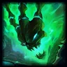
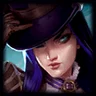
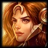
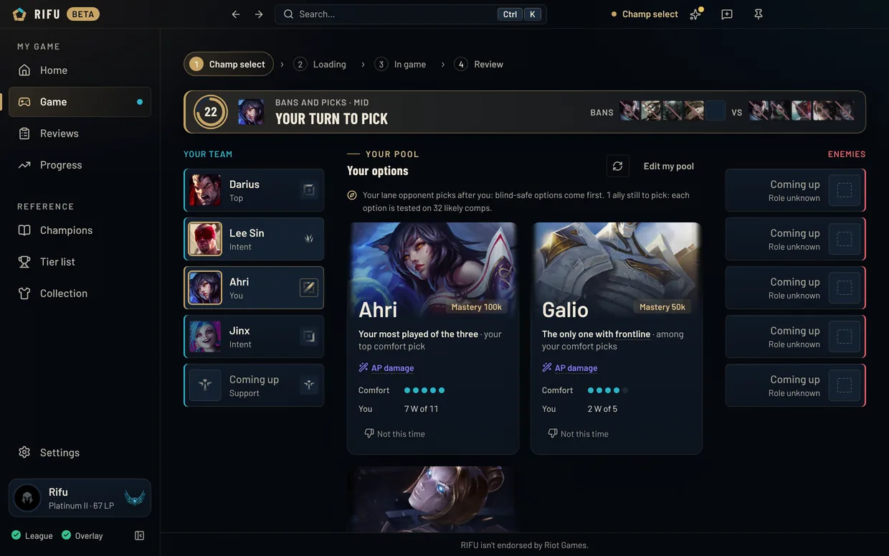
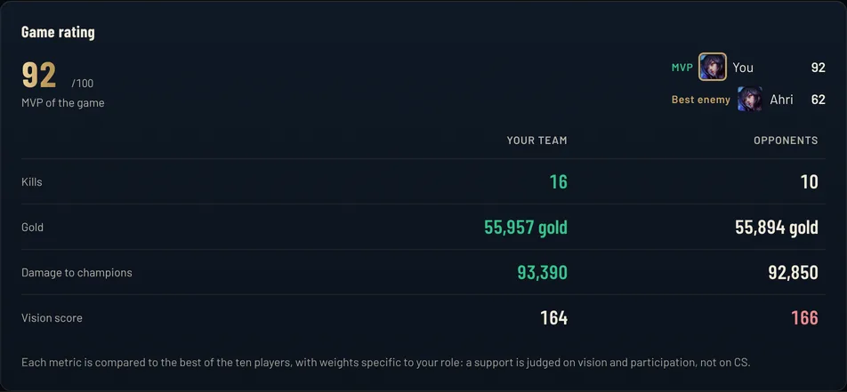
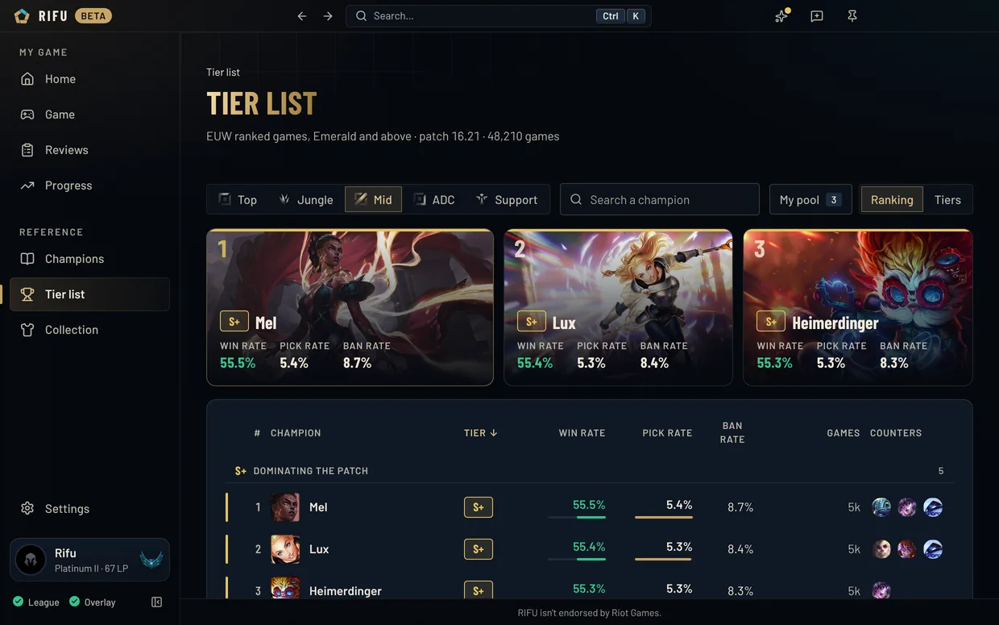

Summoner's Rift
- Options from your pool based on what the comp is missing
- Full loading screen, overlays and post-game
- Co-op vs. AI and custom games included
It follows you from champ select to the post-game: draft help from your pool, scouting of all ten players, in-game overlays and a game score out of 100, in ranked and in ARAM. It tells you why, and lets you choose. All free.



Illustrative demo. In the app, the analysis is based on the profiles of all 173 champions, your games and the patch statistics.
From champ select to the post-game, RIFU switches screens along with League. Hover the highlights or click the numbered pins to inspect each screen.
RIFU follows the draft live and tells you what each champion in your pool brings that the others don't. You always have the final say.

A full screen over League's loading screen, with the game plan up top. Rank, form, premades: you know who you're up against before the first second.

A compact HUD that lets your clicks through, the Ctrl + X panel and item gaps on TAB. Three presets: Minimal, Standard, Full.


Each stat is compared with the best of the ten players, weighted by your role. A support is judged on vision, not on minions.


RIFU reviews every game and remembers what repeats. You work on one thing at a time, and you see when it's fixed. Everything is compared with your own level, never with other players.
Farm dropping after lane, a lead thrown, too much dead time: the post-game flags it when it comes back from one game to the next.
RIFU suggests the matching goal, for example “1 death at most before 15 min”. You take it, or none.
Once you stop doing it, it shows as “fixed”. Your strengths are tracked the same way.

A summary of the past week on the home screen, from 5 games.
Average score, recurring mistake and strength, from 3 reviewed games.
What changes between the two, in your most played role.
Farming, fighting, vision, survival and objectives, with your 30-day LP curve.
The advice changes with the mode. In ARAM, roles no longer matter: the bench and what your team is missing do.
For augments, RIFU shows how often each one is picked, never how much it wins. You can turn overlays off mode by mode.
What used to take several tools, one of them paid, RIFU brings together in one place.
Top three podium, S+ to D tiers (S+ only for the five best in the role) and a “My pool” filter, computed by RIFU from EUW ranked games in Emerald and above.

Your skins out of the total, completion, store value in RP and your chromas. Filter by champion or by skin line: the collection stays on your PC.

RIFU never reads the game's memory, and only touches League's files to enable replays, when you ask.
Never “play X”. Suggestions come from your pool, not from a single meta.
No MMR estimate, no unmasking of hidden players, no tracking of enemy summoner spells.
Match history, memos and settings stay on your PC. Your feedback is only sent with your consent.
The best of Porofessor and DPM, brought together in one free app.
| Feature | RIFUStandalone Windows app | PorofessorWindows app | DPMWindows app |
|---|---|---|---|
| App price | Free | Free with ads | Premium, from €3.33/month |
| Draft help based on your comp's gaps, from your pool | Included | No | Premium |
| Runes, summoner spells and build import | Included | Included | Premium |
| Player tags on the loading screen (streaks, one-tricks…) | Included | Included | No |
| Gold difference and recommended build in game | Included | Included | Premium |
| LP tracking | Included | No | Premium |
| Detailed post-game analysis | Included | Included | Premium |
| Skin collection and RP value | Included | No | Premium |
Based on the public offers of Porofessor and of DPM's Windows app (Premium subscription only, €4.99/month or €39.99/year), checked in October 2026; they may have changed since. Porofessor and DPM are trademarks of their respective owners. RIFU is not affiliated with either of them.
RIFU-Setup-….exe file, from the download page.Yes, completely. In the long run, RIFU will be funded by discreet ads, only inside the RIFU window and outside games: never in champ select, on the loading screen, in game or in an overlay.
That's the goal. RIFU brings loading screen scouting, a draft assistant, in-game overlays, a post-game breakdown and LP tracking into one app, with no subscription. Its strength: it explains what your comp is missing and suggests champions from your own pool.
Yes. The app is fully available in English and French. It follows your Windows language, and you can switch it in Settings › Language.
RIFU only uses the interfaces Riot provides to third-party apps: the Riot API, the League client API and the live game data. It never reads the game's memory, only touches League's files to enable replays if you ask, and never plays for you.
It follows Riot's rules for third-party apps: several options rather than a forced pick, no MMR estimate, no unmasking of hidden players in champ select, no tracking of enemy summoner spells or ultimates.
The beta is closed and invite-only, with one personal code per player. Join the RIFU Discord to ask for a spot.
Each stat of the game (kills, kill participation, damage, gold, minions, vision, objectives) is compared with the best of the ten players, then weighted by your role. The best player on the winning team is MVP; the post-game also names the best player on the other team. It is neither a rank nor an MMR estimate.
No. They never take focus from the game, the HUD lets your clicks through, and you set their opacity (30 to 100%) and size. During the beta they need borderless mode; fullscreen will come with the signed version.
No. RIFU is a standalone app: it doesn't need the Overwolf client.
During the beta the installer isn't signed with a certificate yet, so Windows SmartScreen flags it. Signing is planned for the public release. Until then, only download RIFU from this site or the official releases page.
Summoner's Rift (normals, ranked, Co-op vs. AI, custom games), Swiftplay, ARAM and ARAM Mayhem. In Arena, RIFU gives no draft advice, and Brawl games aren't tracked. EUW server, on Windows 10 and 11.
The minimum needed to show profiles and the loading screen. Everything else stays on your PC, and feedback is only sent if you turn it on. Details are in the privacy policy.
The community server: this is where the beta happens.
Invite discord.gg/CGRcbW4SVw
Free, for Windows. Join the Discord to get your beta code.